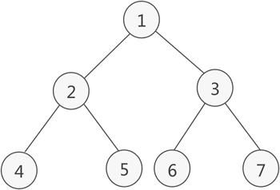

阅读：0
作者：解学武
二叉树先序遍历（递归与非递归）及C语言实现
所谓先序遍历二叉树，指的是从根结点出发，按照以下步骤访问二叉树的每个结点：
举个简单的例子，下图是一棵二叉树：
先序遍历这棵二叉树的过程是：
对于顺序表存储的二叉树，递归实现先序遍历二叉树的 C 语言代码为：
对于链表存储的二叉树，递归实现先序遍历二叉树的 C 语言代码为
实际上，我们只需要对先序遍历的过程稍加修改，就可以设计出构建二叉树的函数，对应的 C 语言代码为：
对于顺序表存储的二叉树，非递归实现先序遍历二叉树的 C 语言代码为：
对于链表存储的二叉树，非递归实现先序遍历二叉树的 C 语言代码为：
- 访问当前结点；
- 进入当前结点的左子树，以同样的步骤遍历左子树中的结点；
- 遍历完当前结点的左子树后，再进入它的右子树，以同样的步骤遍历右子树中的结点；
举个简单的例子，下图是一棵二叉树：

图 1 二叉树
图 1 二叉树
先序遍历这棵二叉树的过程是：
访问根节点 1； 进入 1 的左子树，执行同样的步骤： 访问结点 2； 进入 2 的左子树，执行同样的步骤： 访问结点 4； 结点 4 没有左子树； 结点 4 没有右子树； 进入 2 的右子树，执行同样的步骤： 访问结点 5； 结点 5 没有左子树； 结点 5 没有右子树； 进入 1 的右子树，执行同样的步骤： 访问结点 3； 进入 3 的左子树，执行同样的步骤： 访问结点 6； 结点 6 没有左子树； 结点 6 没有右子树； 进入 3 的右子树，执行同样的步骤： 访问结点 7； 结点 7 没有左子树； 结点 7 没有右子树；经过以上过程，就访问了二叉树中的各个结点，访问的次序是：
1 2 4 5 3 6 7
递归先序遍历二叉树
观察整个先序遍历二叉树的过程会发现，访问每个结点的过程都是相同的，可以用递归的方式实现二叉树的先序遍历。对于顺序表存储的二叉树，递归实现先序遍历二叉树的 C 语言代码为：
void PreOrderTraverse(BiTree T, int p_node) {
//根节点的值不为 0，证明二叉树存在
if (T[p_node]) {
printf("%d ", T[p_node]);
//先序遍历左子树
if ((2 * p_node + 1 < NODENUM) && (T[2 * p_node + 1] != 0)) {
PreOrderTraverse(T, 2 * p_node + 1);
}
//最后先序遍历右子树
if ((2 * p_node + 2 < NODENUM) && (T[2 * p_node + 2] != 0)) {
PreOrderTraverse(T, 2 * p_node + 2);
}
}
}
对于链表存储的二叉树，递归实现先序遍历二叉树的 C 语言代码为
void PreOrderTraverse(BiTree T) {
//如果二叉树存在，则遍历二叉树
if (T) {
printf("%d",T->data); //调用操作结点数据的函数方法
PreOrderTraverse(T->lchild);//访问该结点的左孩子
PreOrderTraverse(T->rchild);//访问该结点的右孩子
}
}
【扩展】
在《二叉树的链式存储结构》一节中，CreateBiTree() 函数创建的只是给定的一棵二叉树，程序运行时无法手动指定二叉树。实际上，我们只需要对先序遍历的过程稍加修改，就可以设计出构建二叉树的函数，对应的 C 语言代码为：
void CreateBiTree(BiTree* T) {
int num;
scanf("%d", &num);
//如果输入的值为 0，表示无此结点
if (num == 0) {
*T = NULL;
}
else
{
//创建新结点
*T = (BiTree)malloc(sizeof(BiTNode));
(*T)->data = num;
CreateBiTree(&((*T)->lchild));//创建该结点的左孩子
CreateBiTree(&((*T)->rchild));//创建该结点的右孩子
}
}
输入1 2 4 0 0 5 0 0 3 6 0 0 7 0 0，就可以将图 1 中的二叉树用链表存储起来。
非递归先序遍历二叉树
我们知道，递归的底层实现借助的是栈存储结构。所谓先序遍历二叉树的非递归方式，其实就是自己创建一个栈，模拟递归的过程实现二叉树的先序遍历。对于顺序表存储的二叉树，非递归实现先序遍历二叉树的 C 语言代码为：
//全局变量，记录栈顶的位置
int top = -1;
//前序遍历使用的入栈函数
void push(BiTree a, int elem) {
a[++top] = elem;
}
//弹栈函数
void pop() {
if (top == -1) {
return;
}
top--;
}
//拿到栈顶元素
int getTop(BiTree a) {
return a[top];
}
//先序遍历顺序表中的完全二叉树
void PreOrderTraverse(BiTree Tree) {
//模拟栈，记录入栈结点所在顺序表中的下标
int ad[NODENUM] = { 0 };
int p;
//根节点所在的顺序表下标先入栈
push(ad,0);
//直到栈中为空
while (top != -1)
{
//取出一个下标
p = getTop(ad);
pop(ad);
//判断当前下标是否超出结点的总数
while (p < NODENUM)
{
//输出 p 下标处存储的结点值
printf("%d ", Tree[p]);
//找到该结点的右孩子，该它的数组下标入栈
if ((2 * p + 2 < NODENUM) && (Tree[2 * p + 2] != 0)) {
push(ad, 2 * p + 2);
}
//找到 p 下标结点的左孩子，并继续遍历
p = 2 * p + 1;
}
}
}
对于链表存储的二叉树，非递归实现先序遍历二叉树的 C 语言代码为：
//全局变量，记录栈顶的位置
int top = -1;
//前序遍历使用的进栈函数
void push(BiTree* a, BiTree elem) {
a[++top] = elem;
}
//弹栈函数
void pop() {
if (top == -1) {
return;
}
top--;
}
//拿到栈顶元素
BiTNode* getTop(BiTree* a) {
return a[top];
}
//先序遍历二叉树
void PreOrderTraverse(BiTree Tree) {
BiTNode* a[20];//定义一个顺序栈
BiTNode* p;//临时指针
push(a, Tree);//根结点进栈
while (top != -1) {
p = getTop(a);//取栈顶元素
pop();//弹栈
while (p) {
printf("%d ", p->data);//调用结点的操作函数
//如果该结点有右孩子，右孩子进栈
if (p->rchild) {
push(a, p->rchild);
}
p = p->lchild;//一直指向根结点最后一个左孩子
}
}
}
本节给出的都是实现先序遍历的 C 语言关键代码，对于先序遍历顺序表中存储的完全二叉树，可以结合《二叉树的顺序存储结构》一节给出的完整程序；对于先序遍历链表中存储的二叉树，可以结合《二叉树的链式存储结构》一节中给出的完整程序。也可以猛击这里下载完整源码。